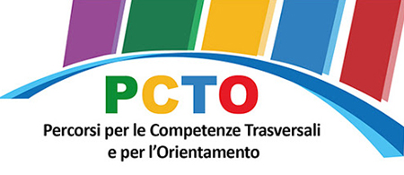

Documentazione del Progetto
Abbiamo partecipato a una lezione introduttiva sul percorso PCTO promosso dal Ministero, un incontro rivolto a tutti gli indirizzi scolastici. Tenuto dal prof. Vairo, l’appuntamento ha offerto una panoramica sulle opportunità formative e sulle attività previste, permettendoci di comprendere meglio il valore di questa esperienza per la nostra crescita personale e professionale.
Il professor Vairo ha aperto l’incontro spiegando il significato del PCTO e la sua importanza nella formazione degli studenti. Ci ha illustrato gli obiettivi del percorso e le competenze che avremmo potuto sviluppare.
Sono stati descritti i diversi ambiti in cui il PCTO può essere applicato, dai progetti aziendali alle esperienze nel sociale. Abbiamo scoperto le possibilità offerte per ciascun indirizzo di studio.
Il professor Vairo ci ha introdotto al concetto di soft skills, ovvero quelle competenze trasversali che influenzano il modo in cui interagiamo con gli altri e affrontiamo le sfide professionali. Ci ha spiegato che abilità come la comunicazione efficace, la capacità di lavorare in team, la gestione del tempo e il problem solving sono fondamentali non solo nel mondo del lavoro, ma anche nella vita quotidiana.
Abbiamo avuto la possibilità di porre domande sui dettagli del PCTO, approfondendo dubbi e ricevendo consigli su come sfruttare al meglio il percorso. Il confronto ha reso la lezione ancora più interattiva.
Alla fine dell’incontro, abbiamo riflettuto su come il PCTO possa influenzare il nostro futuro scolastico e professionale. Siamo usciti dalla lezione con una visione più chiara delle opportunità che ci aspettano.
Durante la lezione sul PCTO, abbiamo sviluppato autonomia, capacità comunicative e consapevolezza del nostro ruolo nella società, fondamentali per la formazione e il futuro professionale.
| Competenza | Descrizione |
|---|---|
| Competenza personale, sociale e capacità di imparare ad imparare | Abbiamo sviluppato autonomia, collaborazione e adattabilità nell'affrontare nuove esperienze formative. |
| Competenza in materia di cittadinanza | Abbiamo acquisito consapevolezza sul ruolo attivo dei cittadini e sull’importanza della partecipazione responsabile alla società. |